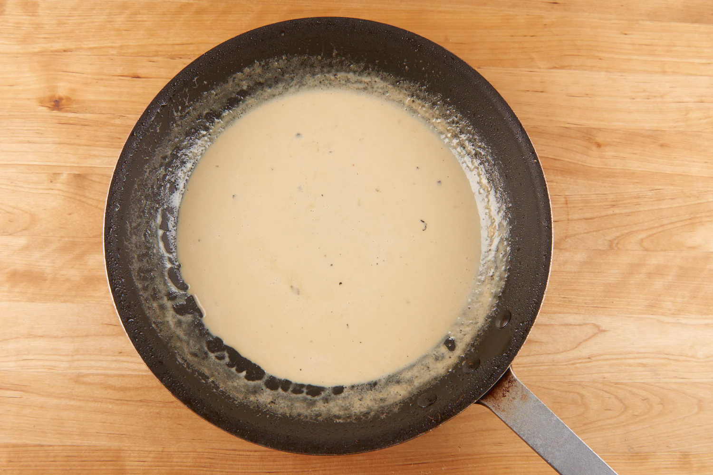
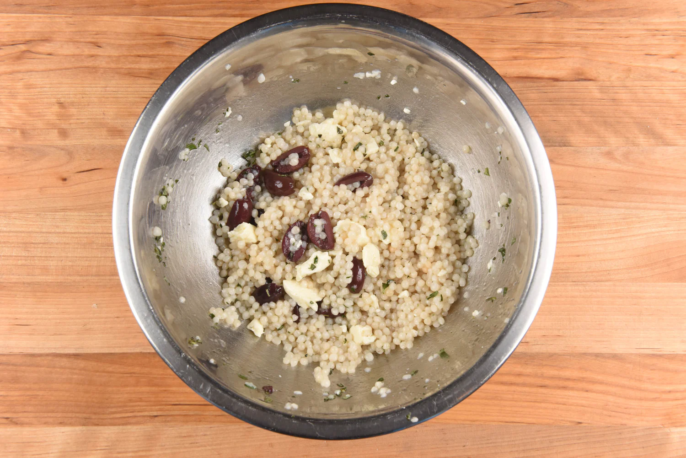

Zitian Zhou's Kitchen
Buttermilk-Ranch Chicken
with mashed carrot and green beans
Prep & Cook Time: 30-40 min
Difficulty Level: Intermediate
Spice Level: Not Spicy
1. Prepare the Ingredients
Peel, trim, and cut carrot into ½" pieces. Trim ends off green beans. Pat chicken breasts dry, and season both sides with half the ranch seasoning (reserve remaining for sauce).
2. Roast the Green Beans
Place green beans on prepared baking sheet. Toss with 1 tsp. olive oil, a pinch of salt, and ¼ tsp. pepper. Spread into a single layer and roast in hot oven until tender and slightly caramelized, 15-18 minutes. While green beans roast, make mashed carrots.

3. Make the Mashed Carrots
Add carrots to boiling water and cook until very fork-tender, 12-15 minutes. Drain in a colander and return to pot. Add butter and mash until smooth. Season with a pinch of salt and pepper. Cover and set aside. While carrot cooks, cook chicken.
4. Cook the Chicken
Heat 1 tsp. olive oil in a medium non-stick pan over medium heat. Add chicken to hot pan and cook until browned and chicken reaches a minimum internal temperature of 165 degrees, 5-7 minutes per side. Remove from burner. Transfer chicken to a plate and rest 5 minutes. Reserve pan; no need to wipe clean. While chicken rests, make sauce.
5. Make Sauce and Finish Dish
Return pan used to cook chicken to medium heat. Add cream and remaining ranch seasoning to hot pan. Bring to a simmer. Once simmering, stir occasionally until thick enough to coat the back of a spoon, 3-4 minutes. Remove from burner. Plate dish as pictured on front of card, serving sauce over chicken.
Bon appétit!

Sirloin Steak with Blue Cheese Compound Butter
with green beans and roasted fingerling potatoes
Prep & Cook Time: 40-50 min.
Difficulty Level: Expert
Spice Level: Not Spicy
1. Prepare the Ingredients
Trim and thinly slice green onions. Halve potatoes lengthwise. Trim ends off green beans. Mince garlic. Pat steaks dry, and season both sides with a pinch of salt and pepper.
2. Roast the Potatoes
Place potatoes on prepared baking sheet and toss with 2 tsp. olive oil, ½ tsp. salt, and a pinch of pepper. Massage oil and seasoning into potatoes. Spread into a single layer and roast in hot oven until golden brown and fork-tender, 18-20 minutes. While potatoes roast, make butter.
3. Make the Blue Cheese Butter
In a mixing bowl, combine softened butter, blue cheese (to taste), half the garlic (reserve remaining for green beans, use less if desired), half the green onions (reserve remaining for garnish), and a pinch of pepper. Form blue cheese-butter mixture into two equally-sized mounds and place on a plate. Refrigerate until plating.
4. Cook the Steaks
Place a medium non-stick pan over medium heat and add 1 tsp. olive oil. Add steaks to hot pan and cook until steaks are browned and reach a minimum internal temperature of 145 degrees, 5-7 minutes per side. Remove steaks to a plate and tent with foil. Rest at least 5 minutes. Wipe pan clean and reserve.
5. Cook Green Beans and Finish Dish
Return pan used to cook steaks to medium-high heat and add 2 tsp. olive oil. Add remaining garlic to hot pan and cook until fragrant, 30 seconds. Add green beans and ¼ cup water. Cover, and stir occasionally until beans are bright green and water has mostly evaporated, 6-8 minutes. If green beans need more time, add 2 Tbsp. water and stir occasionally, 1-3 minutes. Remove from burner and season with ½ tsp. salt and a pinch of pepper. Plate dish as pictured on front of card, topping steaks with blue cheese butter. Garnish dish with remaining green onions. Bon appétit!
Bon appétit!
Lemon-Pepper Steelhead Trout
with couscous, feta, and Kalamata olives
Prep & Cook Time: 25-35 min.
Difficulty Level: Easy
Spice Level: Not Spicy
1. Make the Couscous
Add couscous to boiling water and cook until tender, 7-10 minutes. Drain couscous in wire-mesh strainer and rinse briefly under cold running water. Set aside in strainer and let cool to room temperature.
2. Prepare the Ingredients
Rinse olives and cut into ¼" slices. Stem and coarsely chop oregano. Rinse trout fillets and pat dry. No, it's not salmon! Steelhead trout is a close cousin of salmon, which explains the similarity in appearance.
3. Make the Vinaigrette
Combine white balsamic, honey, oregano (reserve a pinch for garnish), 1 Tbsp. olive oil, ¼ tsp. salt, and a pinch of pepper in a medium mixing bowl. Stir to combine. Set aside 2 tsp. dressing for garnishing cooked trout.
4. Cook the Trout
Place a medium oven-safe pan over medium-high heat. Add 1 tsp. olive oil and trout, skin side up, to hot pan. Cook on one side until lightly browned, 2-3 minutes. Flip, and season evenly with seasoning blend. Place pan in oven and roast until trout is firm and reaches a minimum internal temperature of 145 degrees, 4-6 minutes. Remove from oven and rest 2 minutes. While trout roasts, toss salad.
5. Toss the Salad
Add couscous, feta, and olives to bowl containing vinaigrette. Toss to combine all ingredients. Garnish trout with reserved vinaigrette and oregano.
6. Plate the Dish
Place a serving of couscous on a plate. Nestle trout fillet against couscous.